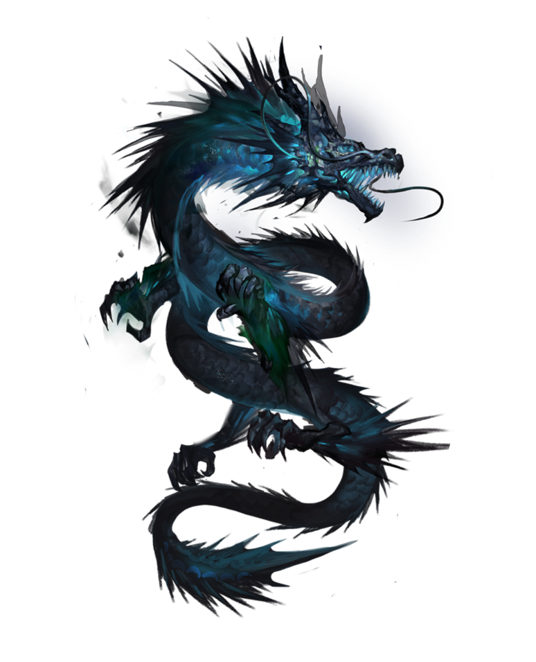
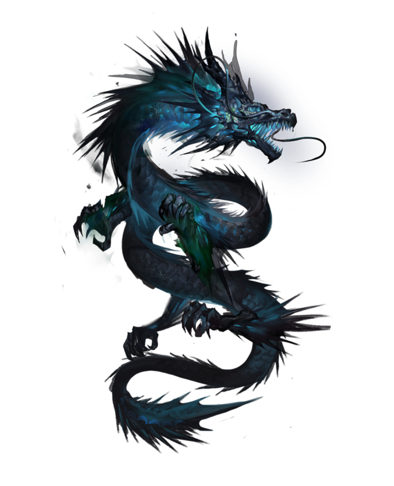

قبل عشر سنوات، وبعد أن فُتِحت “البوابة” التي تربط العالم الواقعي بعالم الوحوش، بعض من الأشخاص العاديين تلقوا قوةً تساعدهم في اصطياد الوحوش داخل البوابة. يعرفون بـ”الصيادين”. لكن، ليس جميعهم بالقوة ذاتها. أدعى سونغ جين-وو، صياد من المستوى
E.
أنا شخص يخاطر بحياته حتى في أدنى المغارات، “
أضعف صياد في العالم”. بلا أي مهارات أظهرها، بالكاد أجني ما يكفي من المال عبر القتال في المغارات منخفضة المستوى… حتى عثرت على مغارة مخفية فائقة الصعوبة داخل بوابة من المستوى
D!
في النهاية، كنت أحتضر، حتى تلقيت قوةً غريبة، سجلٌ من التعليمات لا يراه غيري، طريقة سرية لرفع المستوى لا يعرفها سواي! إن تدربت متبعاً هذه التعليمات واصطدت المزيد من الوحوش، فسيرتفع مستواي. متحولاً من الصياد الأضعف في العالم إلى أقوى صياد في العالم!